Une étape à la fois. Ne passez à la suivante que lorsque vous voyez la phrase écrite en vert. Le câble sert à installer. Les films passent ensuite par le Wi-Fi, et restent dans le casque sans Internet.
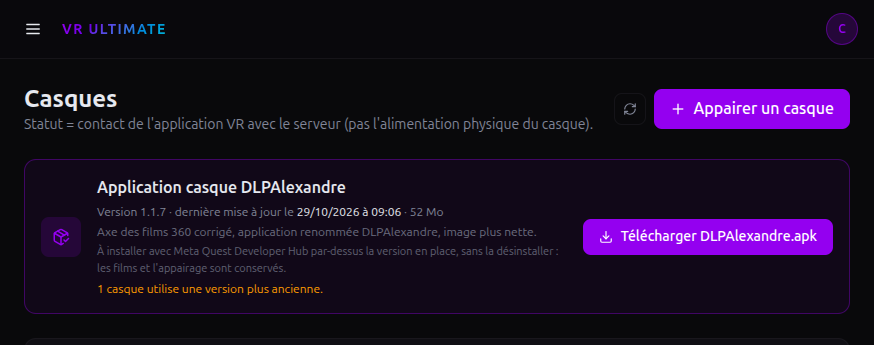
Page Casques du site. Le téléchargement est le bouton violet dans le cadre Application casque.
Téléchargez-le le jour même : le site propose toujours la dernière version. Si Windows l’a nommé DLPAlexandre (1).apk, c’est qu’il était déjà là : supprimez l’ancien et renommez le nouveau en DLPAlexandre.apk.
Le casque, le téléphone et le site développeur Meta doivent utiliser le même compte Meta. Ouvrez les paramètres du casque et notez l’adresse affichée. C’est celle-là, pas une autre, que vous utiliserez aux étapes 1, 2 et 3. Trois comptes différents : le reste du guide ne produit rien, sans message d’erreur clair.
Téléphone et casque. C’est Meta. C’est déjà fait si le casque apparaît dans l’application du téléphone. On ne vous demandera pas de code pour ça.
Casque et site VR Cinema Hub. C’est plus tard, étape 7. Le bouton s’appelle Appairer un casque. Il est sur le site web, dans le menu Casques. Il n’existe pas dans Meta Quest Developer Hub, ni dans l’application Meta Horizon du téléphone.
| Étape | Vous faites | Vous ne continuez que si |
|---|---|---|
| 1 | Créer l’équipe Meta et vérifier le compte | le site dit que le compte est vérifié |
| 2 | Activer le mode développeur sur le téléphone | l’interrupteur reste allumé |
| 3 | Installer le programme Meta sur le PC | vous êtes connecté dedans |
| 4 | Brancher le casque et autoriser le PC | le casque apparaît dans le programme |
| 5 | Envoyer le fichier .apk dans le casque | le programme du PC affiche l’application |
| 6 | Ouvrir DLPAlexandre dans le casque | un code à 6 chiffres s’affiche |
| 7 | Taper ce code sur le site | le casque quitte l’écran du code |
| 8 | Déposer un film et l’attribuer | le site affiche À jour |
40 minutes pour le premier casque. Les suivants reprennent à l’étape 2 : le programme du PC est déjà là.
Sans cette étape, la ligne « Mode développeur » n’existe pas dans le téléphone. Le guide précédent sautait cette page. C’est pour ça que l’installation s’arrêtait avant même le câble.
La page de vérification affiche que le compte est vérifié, et vous avez bien une équipe à votre nom.
vous n’arrivez pas à vous connecter avec le compte du casque, ou si le site refuse la vérification. Inutile de brancher le casque : le mode développeur restera invisible. Reprenez avec le bon compte, ou demandez à la personne qui gère le compte Meta de faire cette page à votre place.
Cela se fait sur le téléphone, dans l’application Meta Horizon. Pas dans le casque, pas sur le PC.
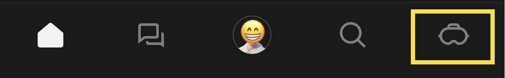
Téléphone, application Meta Horizon. L’icône de casque est à droite dans la barre du bas. Ces images viennent de la documentation Meta, en anglais.
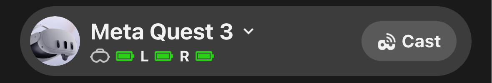
Touchez la ligne du casque elle-même, ici « Meta Quest 3 ».
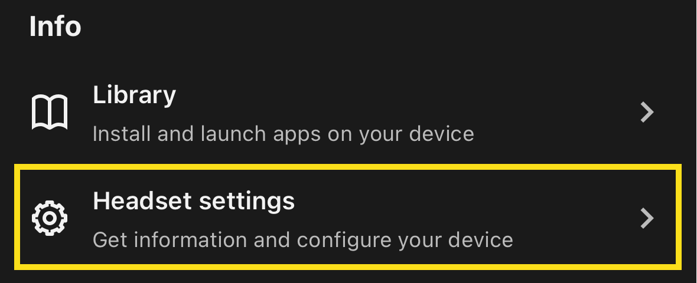
Puis Headset settings. En français : Paramètres du casque.
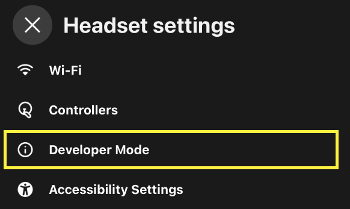
Dans ce menu, Developer Mode. En français : Mode développeur.
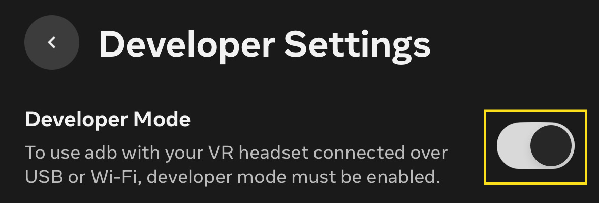
Sur cette image l’interrupteur est encore à gauche, donc éteint. Poussez-le vers la droite : il doit rester activé.
L’interrupteur Mode développeur est activé, et il le reste quand vous revenez sur l’écran.
Ne cherchez pas plus loin dans les menus. Revenez à l’étape 1. Les trois causes, dans l’ordre : le téléphone n’est pas connecté avec le compte du casque ; le compte n’est pas vérifié ; aucune équipe n’a été créée. Tant que la ligne est absente, le PC ne pourra pas installer l’application.
Le programme s’appelle Meta Quest Developer Hub. C’est lui qui installe l’application, avec la souris. Vous n’aurez pas de commande à taper.
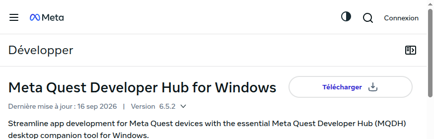
La bonne page de téléchargement. Le bouton s’appelle Télécharger, à droite du titre Meta Quest Developer Hub for Windows.
Meta Quest Developer Hub est ouvert et vous y êtes connecté. Quest Link est fermé, y compris dans la zone près de l’horloge.
La question d’autorisation s’affiche dans le casque, pas sur l’écran du PC. Si vous regardez le moniteur, vous ne la verrez pas.
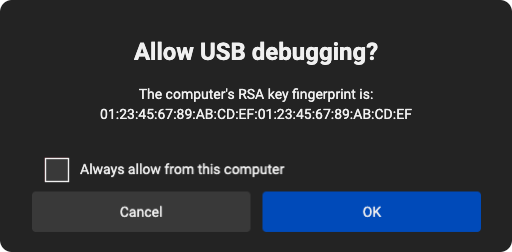
Cette fenêtre s’affiche dans le casque. Cochez Always allow from this computer (Toujours autoriser cet ordinateur), puis OK.
Device Manager est une ligne dans ce programme, en anglais. Ce n’est pas le Gestionnaire de périphériques de Windows. Si une fenêtre liste le clavier, l’écran et la souris, fermez-la : ce n’est pas la bonne.
Le milieu de la fenêtre parle du casque, avec une pastille verte Active. S’il n’y est pas, restez ici. N’envoyez pas le fichier.
Dans le casque : Paramètres → Développeur → Révoquer les autorisations de débogage USB. Débranchez, rebranchez, et acceptez cette fois en cochant « toujours ».
Changez de câble, puis de port USB à l’arrière. Redémarrez le casque (appui long sur le bouton d’alimentation, Éteindre, rallumez). Vérifiez que Quest Link est bien quitté. Si l’écran est toujours vide, allez à la dernière page de ce guide, « Secours », et faites uniquement la partie pilote. Revenez ici ensuite.
Un double-clic sur le fichier .apk ne l’installe pas. Windows ne sait pas l’ouvrir. Seul le programme Meta Quest Developer Hub peut l’envoyer au casque.
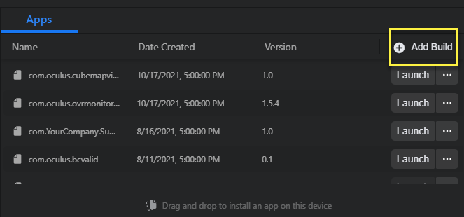
Dans Device Manager, l’onglet s’appelle Apps. Le bouton à utiliser est Add Build, encadré en jaune. Pas un double-clic sur le fichier.
Le nom DLPAlexandre est visible dans la liste Apps du programme, sur le PC. Tant qu’il n’y est pas, le casque n’a rien reçu : ne cherchez pas l’application dans le casque.
Ne recommencez pas dix fois. Photographiez le message.
S’il contient INSTALL_FAILED_UPDATE_INCOMPATIBLE : une ancienne version est déjà dans le casque. N’effacez rien. Appelez votre prestataire.
S’il dit que le casque n’est pas connecté : retour à l’étape 4. Le fichier n’a pas été envoyé.
Seulement une fois le nom visible dans Apps. Le câble ne sert plus, sauf pour un autre casque.
Elle n’est pas sur l’écran d’accueil, ni dans la liste normale des jeux. Meta la range à part. Si vous ne faites pas le chemin ci-dessous, vous concluez que l’installation a échoué alors qu’elle a réussi.
Gardez le casque sur la tête. Manette droite : le bouton avec le logo, sous le pouce, ouvre le menu. Pour choisir une ligne, pointez-la avec la manette et pressez la gâchette, sous l’index. Tous les clics de cette page se font ainsi.
Faites ces quatre gestes dans l’ordre, puis recommencez le chemin A et le chemin B.
1. Vous devez être sur le profil principal, pas un invité. Bouton logo → icône de personne. S’il y a plusieurs noms, prenez le premier, celui du compte qui a le mode développeur.
2. Éteignez vraiment le casque. Appui long sur le bouton d’alimentation (pas le bouton logo) → Éteindre. Comptez jusqu’à dix. Rallumez.
3. Sur le téléphone, coupez Mode développeur. Éteignez le casque, rallumez-le. Réactivez Mode développeur. Éteignez et rallumez encore.
4. Si la ligne manque toujours, le fichier n’est pas dans le casque. Retour à l’étape 5 : le nom DLPAlexandre doit être dans la liste Apps du PC.
Zone de jeu : choisissez Stationnaire si on vous le propose, sinon tracez le minimum demandé. Une demande d’autorisation : Autoriser. Une demande pour une application de source inconnue : acceptez. Ensuite seulement, l’écran avec le code apparaît.
DLPAlexandre est ouvert et un code à 6 chiffres est affiché. Laissez cet écran. Ne quittez pas l’application. Pour la rouvrir plus tard, refaites le chemin A ou B : elle ne sera toujours pas sur l’écran d’accueil.
Meta Quest Developer Hub sert à envoyer le fichier .apk. L’application Meta Horizon du téléphone sert au mode développeur. Aucun des deux n’a de bouton Appairer. Le code à 6 chiffres se tape sur le site, dans la fenêtre ci-dessous.
Le câble ne sert plus. Le casque a besoin du Wi-Fi.
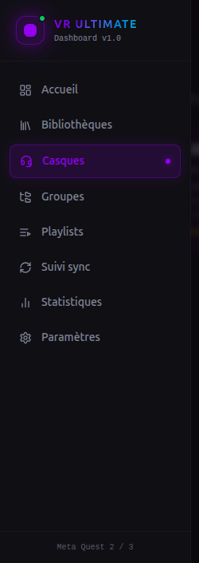
Sur le site vr-cinema-hub.vercel.app, menu de gauche. Cliquez sur Casques, la ligne violette. Sur un petit écran, ouvrez d’abord le menu avec les trois traits en haut à gauche.
Le bouton violet « Appairer un casque » est en haut à droite de cette page. Le bouton « Télécharger » à côté sert au fichier, pas à l’appairage.
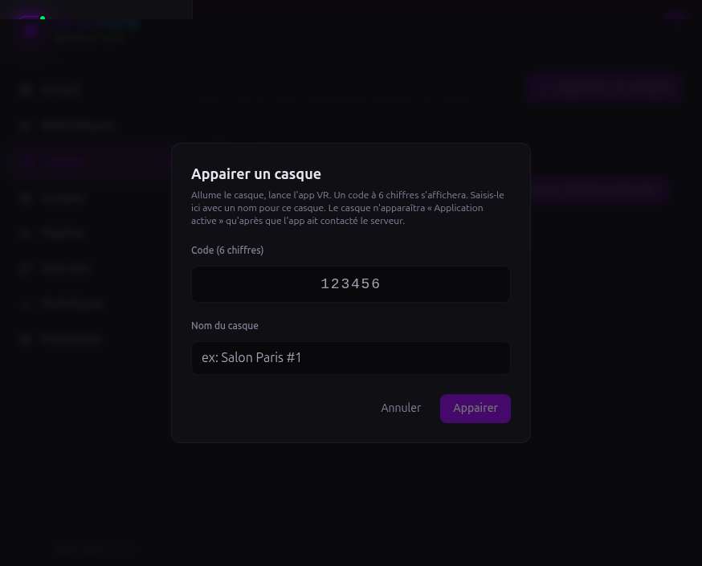
Cette fenêtre s’ouvre sur le site. Le 123456 affiché en gris est un exemple : effacez-le et tapez le code montré dans le casque. Puis un nom, puis Appairer.
Dans le casque, l’écran du code a disparu. Sur le site, le nom que vous avez choisi apparaît dans la liste des casques.
Bouton logo, quittez DLPAlexandre avec la croix, puis rouvrez-la par le chemin A ou B de l’étape 6. Un nouveau code s’affiche. L’ancien ne marchera plus. Retapez-le tout de suite, le Wi-Fi restant connecté.
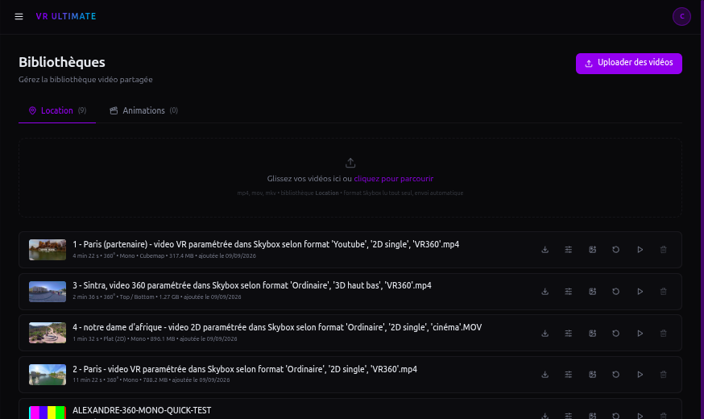
Page Bibliothèques. Onglets Location et Animations, zone de dépôt, bouton Uploader des vidéos.
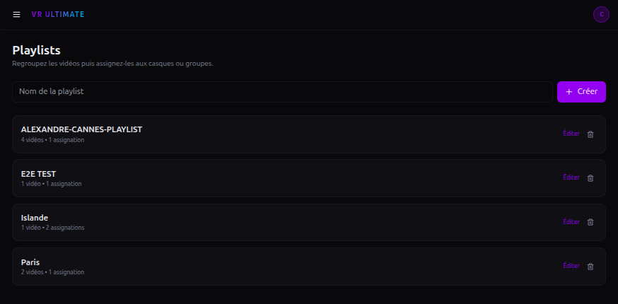
Page Playlists. Le nom se tape à gauche, le bouton Créer est à droite. Éditer est sur la carte.
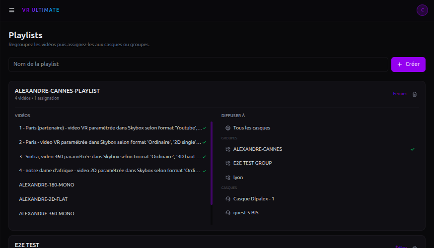
Après Éditer : colonne Vidéos à gauche, colonne Diffuser à à droite, bouton Fermer en haut.
Menu Groupes. Créez un groupe, par exemple « Salle A ». Cliquez sur Gérer les membres et cliquez sur chaque casque à y mettre. Ensuite, dans la playlist, cochez le groupe plutôt que les casques un par un. Un casque ajouté plus tard au groupe reçoit les films tout seul.
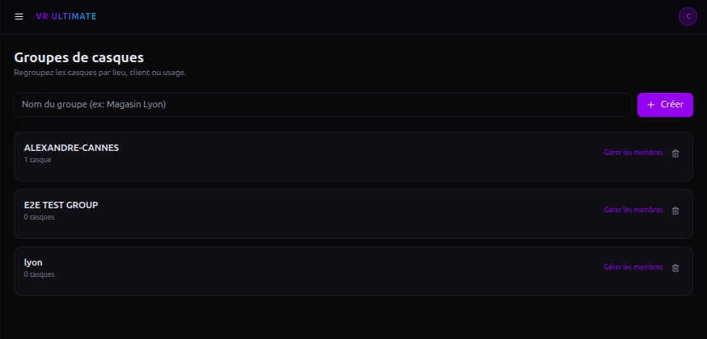
Page Groupes. Créer en haut à droite, Gérer les membres sur la carte.
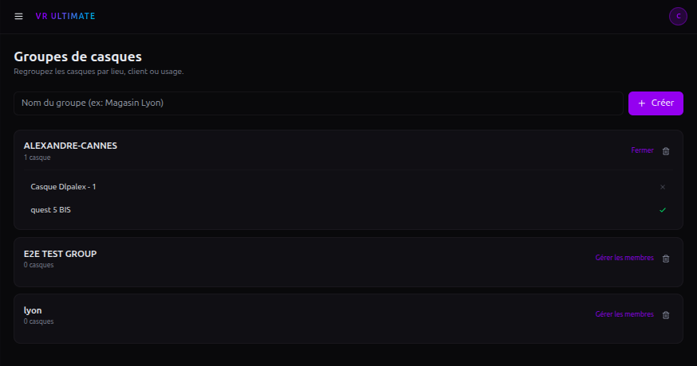
Gérer les membres ouvert. Une coche verte veut dire que le casque est dans le groupe. Fermer replie la liste.
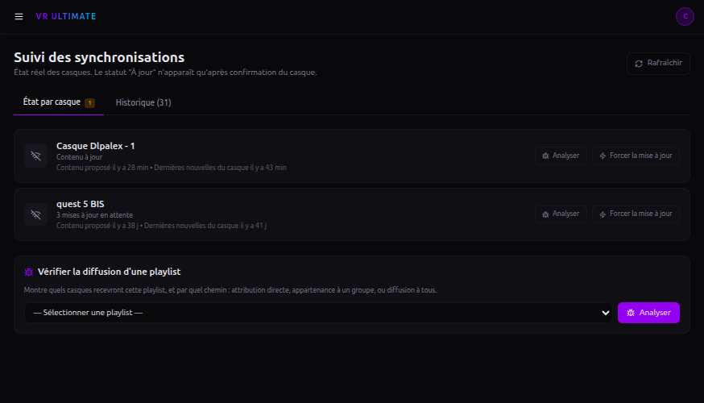
Menu Suivi sync. Rafraîchir en haut à droite. Analyser et Forcer la mise à jour sont sur la ligne du casque.
Dès que vous l’enlevez, il se met en veille en une quinzaine de secondes et suspend le téléchargement. Pendant le premier remplissage, reposez-le sur la tête toutes les une à deux minutes, jusqu’à À jour. Faites ça la veille, pas le matin de l’événement. Un film pèse souvent plus d’un gigaoctet.
| Ce qui est écrit | Ce que vous faites |
|---|---|
| À jour | Rien. Lancez un film dans le casque pour contrôler l’image. Ensuite le Wi-Fi peut être coupé : les films restent. |
| En attente ou une mise à jour en attente | L’application est ouverte ? Le Wi-Fi tient ? Le casque ne s’est pas endormi ? Puis Rafraîchir. |
| Jamais synchronisé | Le casque est relié mais n’a rien reçu. Ouvrez l’application, et vérifiez que la playlist est bien cochée sur ce casque. |
| Échec de mise à jour | Cliquez sur Analyser. Vérifiez le Wi-Fi et la place libre. Puis Forcer la mise à jour. |
| Application hors ligne | L’application est fermée. Le casque peut quand même être allumé. Rouvrez DLPAlexandre si un nouveau film doit arriver. |
Le casque est À jour, un film se lance, l’image est dans le bon sens, et il continue de jouer si vous coupez le Wi-Fi.
Au lancement, le casque place devant le spectateur le centre de l’image. Si le tournage a mis le sujet ailleurs, réglez-le une fois pour toutes, sans renvoyer le film.
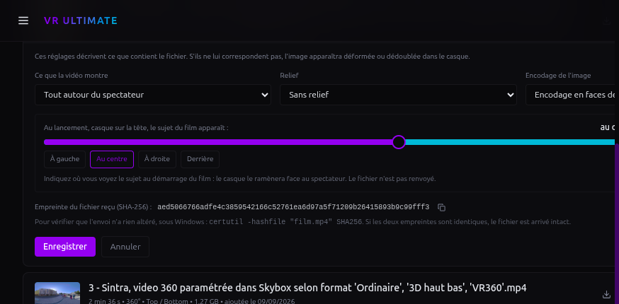
Icône de curseurs sur la ligne du film. Le sujet se règle avec À gauche, Au centre, À droite ou Derrière, puis Enregistrer.
La page Casques du site signale les casques concernés par « mise à jour disponible ». La mise à jour s’installe par-dessus l’ancienne version : les films restent dans le casque et il reste relié au site. Rien à refaire, aucun code à retaper.
Désinstaller efface les films et le lien avec le site. Il faudrait retaper un code et tout retélécharger. La mise à jour se fait toujours par-dessus.
Un message INSTALL_FAILED_UPDATE_INCOMPATIBLE veut dire que le fichier ne vient pas du site. N’effacez rien et appelez votre prestataire.
Jusqu’à la version 1.1.6, l’application s’appelait VR Cinema Quest dans le casque. Après la mise à jour, elle s’appelle DLPAlexandre, au même endroit dans Sources inconnues, avec les mêmes films.
Reprenez la page indiquée. N’enchaînez pas les essais au hasard.
| Ce que vous voyez | Ce que vous faites |
|---|---|
| Pas de ligne « Mode développeur » sur le téléphone | Étape 1. Mauvais compte, compte non vérifié, ou équipe non créée. |
| Le PC ne montre pas le casque | Étape 4. Casque sur la tête, refuser Quest Link, cocher « toujours autoriser ». Puis changer de câble et de port. En dernier : l’étape Secours, partie A seulement. |
| Quest Link s’ouvre tout seul | Refusez dans le casque. Sur le PC, flèche ^ près de l’horloge, clic droit sur l’icône Meta, Quitter. Rebranchez. |
| Un double-clic sur le fichier .apk ne fait rien | Normal. Windows ne l’ouvre pas. Étape 5 : bouton Add Build dans Meta Quest Developer Hub, le casque branché et en pastille verte. |
| L’application est introuvable dans le casque | Étape 6, chemin A puis chemin B. Pas l’écran d’accueil. Si la ligne Sources inconnues n’existe pas : éteindre le casque, réactiver le mode développeur, rallumer. |
| Le code à 6 chiffres ne marche pas | Le Wi-Fi du casque est connecté ? Fermez DLPAlexandre, rouvrez-la par l’étape 6, tapez le nouveau code tout de suite. |
| Le casque est relié mais ne reçoit pas le film | La playlist est cochée sur ce casque ? L’application est ouverte ? Suivi sync → Analyser, puis Forcer la mise à jour. |
| L’écran reste noir, le son joue | Le fichier n’est pas lisible par le casque. Demandez un export MP4 H.264 et renvoyez-le. |
| L’image est coupée en deux, à l’envers, ou en damier | Bibliothèques, icône de curseurs sur la ligne du film. Corrigez la projection et le relief, Enregistrer. N’envoyez pas le fichier une seconde fois. |
| Au lancement d’un film 360, le sujet n’est pas face à vous | Bibliothèques, icône de curseurs, « le sujet du film apparaît » : indiquez où vous le voyez, Enregistrer. Détail à la fin de l’étape 8. |
| Une nouvelle version de l’application est annoncée | Page « Mettre à jour l’application ». Jamais de désinstallation. |
| Plus de place dans le casque | Retirez des films de sa playlist. Il les efface à la synchronisation suivante. La page Casques indique la place libre. |
Ne supprimez pas le casque sur le site : vous perdez son historique et il faudra retaper un code. Utilisez Forcer la mise à jour.
Ne désinstallez pas l’application dans le casque sans en parler à votre prestataire. Selon la version déjà présente, la désinstallation efface le lien local et oblige à tout refaire.
N’installez pas un fichier dont le nom contient STAGING sur ce site de production.
Site, films, playlist, application ouverte sur les casques, attendre À jour. Ensuite le Wi-Fi peut être coupé : ce qui est déjà dans le casque reste lisible.
Windows ne sait pas parler au casque tant que ce pilote n’est pas installé. Meta Quest Developer Hub le fait souvent tout seul. Cette page ne sert que s’il ne l’a pas fait.
Fermez d’abord Meta Quest Developer Hub, complètement, avant les étapes ci-dessous.
S’il n’y a pas de ligne « Installer » dans le clic droit :
Débranchez le casque, rebranchez-le sur un port à l’arrière, mettez-le sur la tête, et acceptez à nouveau le débogage USB en cochant « toujours ». Rouvrez Meta Quest Developer Hub. Si le casque apparaît, retournez à l’étape 5 et ignorez la partie B.
Uniquement si le glisser-déposer a échoué alors que le casque était bien visible. Fermez Meta Quest Developer Hub avant, sinon les deux programmes se coupent la parole.
| Ce que la fenêtre affiche | Ce que vous faites |
|---|---|
| une ligne qui finit par device | Passez à la commande d’installation. |
| unauthorized | Casque sur la tête. Acceptez le débogage et cochez « toujours ». Relancez la première commande. |
| liste vide, aucune ligne | Mauvais câble, mauvais port, pilote non installé, ou Quest Link encore ouvert. Reprenez la partie A. |
| Success | C’est installé. Passez à l’étape 6 pour ouvrir l’application. Elle n’est pas sur l’écran d’accueil. |
| INSTALL_FAILED_UPDATE_INCOMPATIBLE | Une ancienne version signée autrement est déjà là. N’effacez rien vous-même. Appelez votre prestataire. |